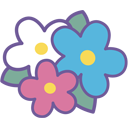

返回底端
当这些字体被选中时，会变颜色
重量级android应用
疯狂android讲义
本书较为详细的讲解了android的使用
- 疯狂java讲义
- android从入门到精通
- 局部刷新讲解
- 疯狂xml讲义
有立体效果的层
阴影的文字
our domain is http://www.lejingda.com
our domain is http://www.lejingda.com
resize:both,允许通过拖动改变组件大小
resize:horizontal,允许通过拖动改变宽度
使用position：absolute，z-index:2，该层完全漂浮在页面之上
使用position：relative，z-index:3，该层漂浮在页面之上
使用position：static，z-index:1,left和top失效
outline:rgba(50,50,50,0.5) solid 10px
宽度为10的灰色实线轮廓
outline:rgba(50,50,50,0.5) groove 16px
宽度为16的凹槽实线轮廓
outline:rgba(50,50,50,0.5) ridge 16px
宽度为16的凸槽实线轮廓
outline:rgba(50,50,50,0.5) ridge 16px ;outline-offset:10px
宽度为16的凸槽实线轮廓,偏移10
不设置overflow属性
测试文字测试文字测试文字测试文字测试文字测试文字测试文字测试文字测试文字
设置overflow属性:hidden
测试文字测试文字测试文字测试文字测试文字测试文字测试文字测试文字测试文字
设置overflow属性:auto
测试文字测试文字测试文字测试文字测试文字测试文字测试文字测试文字测试文字
设置overflow-x属性:hidden
测试文字测试文字测试文字测试文字测试文字测试文字测试文字测试文字测试文字
鼠标移上来会发生颜色渐变

鼠标悬停，开始动画
返回顶端